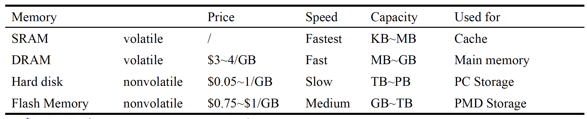
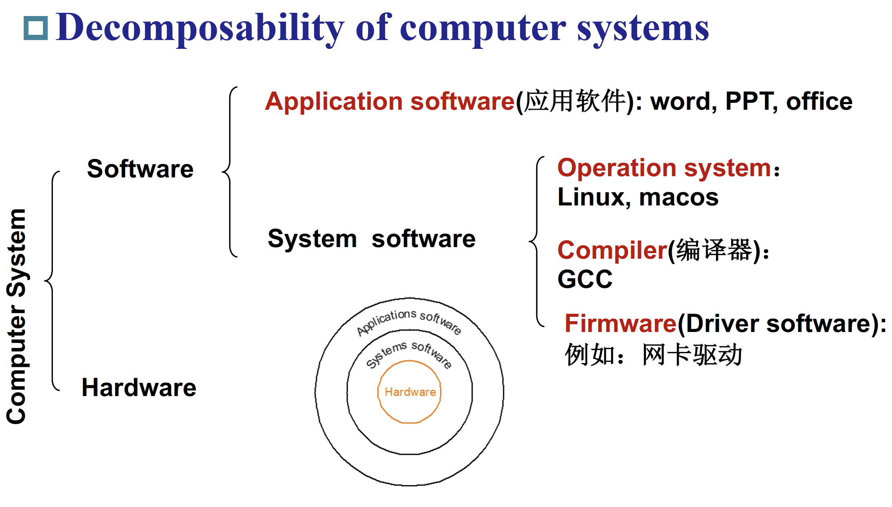

Chapter 01 : Computer abstractions and Technology¶
Introduction¶
Von Neumann Architecture（冯·诺依曼架构）¶
- 计算与存储分离
- 数据和指令放在同一个存储器

Computer Organization¶
Hardware¶


I/O Interfaces（Input/Output）¶
- I/O 主导该设备（直译过来不懂什么意思 qaq ，大概是 I/O 接口非常重要）
- 输入设备：一种向计算机提供信息的设备
- 触摸屏
- 前置摄像头
- 麦克风
- 陀螺仪
- 蓝牙
- 输出设备：将计算机结果传达给用户或另一台计算机的设备
- 扬声器
- 触摸屏
- 蓝牙
Logical Board¶
- 由集成电路组成：
- CPU
- Flash（闪存）
- Power Controller
- I/O Controller

CPU（Processor）¶
- 计算机的活跃部分，包含数据通路（执行数学运算）和控制通路（根据程序要求给予通路、内存、I/O 设备指令），执行数字加法，检测 I/O 设备激活需要的数字、信号等。
Memory¶
- 程序的存储区域，其中包含运行程序所需的数据
- Main Memory（主存）：易失性，用于在程序运行时保存它们。（例如 DRAM，SRAM）
- Second Memory：非易失性，用于在运行前后存储程序和数据。（例如闪存、磁盘）

Software¶

Software Categorization¶
- 按照用途分类：
- 系统软件（针对开发者）
- 应用软件（针对用户）
- 操作系统：
- 处理基本输入和输出操作
- 分配存储和内存
- 在同时使用计算机的多个应用程序之间共享计算机
- 编译器：翻译高级编程语言编写的程序
- Firmware（驱动）：专为硬件设计的软件

From a High-Level Language to the Language of Hardware¶

How build processors?¶
Integrated Circuits¶
- 主板核心由集成电路/芯片构成，集成电路驱动我们技术的进步
- 处理器和内存都是由集成电路组成的
Manufacturing ICs¶


- 工艺的产量由如下公式定义：
\[
每晶片的价格 = \frac{每晶圆的价格}{每晶圆的晶片数\times 良率}
\]
\[
每晶圆的晶片数 \approx \frac{晶圆面积}{晶片面积}
\]
\[
工艺良率 = \frac{1}{(1+\frac{单位面积缺陷数\times 芯片面积}{2})^2}
\]
Explanation
- 晶圆的价格和面积是固定的
- 缺陷的概率是由生产过程决定的
- 芯片面积是由结构和电路设计决定的
Challenges of integrated circuits manufacturing
- 集成度越来越高，复杂度快速增加
- 工艺尺寸达到物理极限，加工精度越来越高， 制造难度越来越大
- 多个技术的集成：电子，光学，机械，计算机，每一个技术都难突破
Challenges of the processor
- 处理器和存储器性能的提高不成比例，“内存墙”问题日趋严重，“冯·诺依曼”架构面临挑战。
- 单位面积功耗增大，散热问题日趋严峻，“功耗墙”问题凸显。
- 受物理规律限制，摩尔定律面临失效，靠工艺进步获得的性能红利逐渐减弱。

Computer design : performance and idea¶
Response Time and Throughput¶
衡量计算机的性能和表现，其中一个重要的标准就是“运行速度”，具体来说：
- Response Time / Execution Time（响应时间 / 执行时间）
- 计算机执行一个任务所需要的时间
- Throughput / Bandwidth（吞吐率）
- 计算机在单位时间内完成的任务数量
Relative Performance¶
我们定义 Performance 和 Execution Time 的关系如下：
\[
Performance_X = \frac{1}{Execution\space Time_X}
\]
而相对性能（Relative Performance）就是对两个比较对象求比值。我们通常所说的比较两台计算机的性能，也就是指计算它们的相对性能。
\[
X\space is\space n\space time\space faster\space than\space Y\Leftrightarrow \frac{Performance_X}{Performance_Y} = \frac{Execution\space Time_Y}{Execution\space Time_X} = n
\]
Measuring Execution Time¶
- Elapse Time（运行时间）
- 总响应时间，包含了所有方面（例如处理过程、输入输出、操作系统开销、空闲时间）
- 决定了系统的 Performance
- CPU Time（CPU 时间）
- 仅计算执行给定任务所需要的时间（不包含输入输出等其他任务的时间）
- 包含了用户的 CPU 时间和系统的 CPU 时间
- 不同的程序受CPU和系统性能的影响不同
- 硬件的操作都由一个恒定速率的时钟控制

- Clock Period（一个时钟周期的时间）
- e.g. \(250ps = 0.25ns = 250\times 10^{-12} s\)
- Clock Frequency / Rate（一秒内的周期数）
- e.g. \(4.0GHz = 4000MHz = 4.0\times 10^9Hz\)
CPU Time¶
CPU Time 如下定义：
\[
CPU\space Time = CPU\space Clock\space Cycles\times Clock\space Cycle\space Time = \frac{CPU\space Clock\space Cycles}{Clock\space Rate}
\]
想要提高 Performance 可以通过：
- 降低 CPU 时钟周期数
- 提高时钟频率
- 硬件设计人员必须经常权衡时钟频率和周期计数
Instruction Count and CPI¶
每条指令的平均周期数（Average Cycles Per Instruction）缩写为 CPI 。
\[
Clock\space Cycles = Instruction\space Count\times Cycles\space Per\space Instruction
\]
\[
CPU\space Time = Instruction\space Count\times CPI\times Clock\space Cycle\space Time = \frac{Instruction\space Count\times CPI}{Clock\space Rate}
\]
- 对于一个程序来说，Instruction Count 由程序本身、编译器、指令集架构（Instruction Set Architechture / ISA）决定。
- CPI 由 CPU 的硬件决定
如果不同指令集采用不同的周期数，定义时钟周期：
\[
Clock\space Cycles = \sum\limits_{i=1}^n(CPI_i\times Instruction\space Count_i)
\]
也可以计算加权平均 CPI：
\[
CPI = \frac{Clock\space Cycles}{Instruction\space Count} = \sum\limits_{i=1}^n(CPI_i\times\frac{Instruction\space Count_i}{Instruction\space Count}) = \sum\limits_{i=1}^n(CPI_i\times Relative\space Frequency_i)
\]
Performance Summary¶
\[
\begin{aligned}
CPU\space Time &= 每个程序包含的指令数 \times 每条指令的平均时钟周期数 \times 时钟周期长度\\
&= \frac{Instructions}{Program}\times\frac{Clock\space Cycles}{Instruction}\times\frac{Seconds}{Clock\space Cycles}
\end{aligned}
\]
Performance 取决于：
- 算法（影响集成电路、有可能影响 CPI）
- 编程语言（影响集成电路、CPI）
- 编译器（影响集成电路、CPI）
- 指令集架构（影响集成电路、CPI、时钟周期时间）

Power Trends¶

Multiprocessors¶
- 多核微型处理器
- 一片中含有多个处理器
- 需要显式并行编程
- 与指令集并行比较，硬件一次性执行多条指令，且程序员不可见
- 但是在编程表现、负载平衡、优化通信和同步有挑战
Pitfalls（陷阱）¶
Amdahl’s Law
- 阿姆达尔定律/边际收益递减规律：改进计算机的一个方面，并期望整体性能按比例提高这样的优化思路是有问题的，总是有一部分内容只允许使用串行不能使用并行优化
\[
T_{improved} = \frac{T_{affected}}{improvement\space factor} + T_{unaffected}
\]
MIPS as a Performance Metric
- MIPS（Millions of Instructions Per Second)：每秒百万条指令数
- MIPS 作为性能指标是不正确的，因为它不能解释：
- 计算机之间指令集架构的区别
- 指令之间复杂度的不同
\[
MIPS = \frac{Instruction\space Count}{Execution\space Time\times 10^6}=\frac{Instruction\space Count}{\frac{Instruction\space Count\times CPI}{Clock\space Rate}\times 10^6}=\frac{Clock\space Rate}{CPI\times 10^6}
\]
Eight Great Ideas¶
- Design for Moore's Law（设计紧跟摩尔定律）
- 摩尔定律：可以放置在单个芯片上的晶体管数量将每 2 年翻一倍。
- 计算机设计师的一个不变因素是适应快速的变化。
- 设计完成时的位置，而不是设计开始时的位置
- Use Abstraction to Simplify Design (采用抽象简化设计)
- 隐藏较低级别的细节，以提供更高级别的简单模型
- Make the Common Case Fast (加速大概率事件)
- 加速大概率事件往往比加速小概率事件更能提高性能
- Performance via Parallelism (通过并行提高性能)
- Performance via Pipelining (通过流水线提高性能)
- 每个流程同时进行，只不过每一个流程工作的对象是时间上相邻的若干产品
- 相比于等一个产品完全生产完再开始下一个产品的生产，会快很多
- 希望每一个流程的时间是相对均匀的
- Performance via Prediction (通过预测提高性能)
- 在猜测中工作，而非等到完全确定了再开始工作
- 从错误预测中恢复的机制并不太昂贵，预测相对准确（大概意思即为就算预测错误改正的成本也不大）
- Hierarchy of Memories (存储器层次)
- 每比特最快、最小和最昂贵的内存位于层次结构的顶部，每比特最慢、最大和最便宜的内存位于底部
- Disk / Tape -> Main Memory（DRAM） -> L2-Cache（SRAM） -> L1-Cache（On-Chip）-> Registers
- Dependability via Redundancy (通过冗余提高可靠性)
- 不仅需要快，还需要可靠
- 每一个物理设备都有可能出错
- 通过加入冗余组件使系统可靠，这些组件可以在发生故障时接管并帮助检测故障
- 一个冗余组件出错了并不会使整个系统崩溃